Hardware
Custom sensor-interface electronics
Two purpose-built PCBs organize the sensor connectors, channel routing, multiplexed acquisition, power, control, and status indication required by the stitched pressure array.
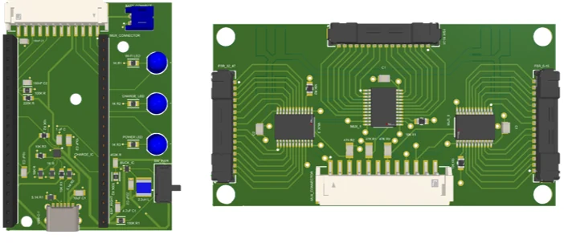
October 2025 – May 2026
A cost-effective pressure-sensor array embedded onto a sock with custom electronics, wireless acquisition, and MATLAB-based 3D data visualization.End goal: reduce the prosthetic fitting time from 1.5 months to 1 week.

Technical overview
The project combines custom wearable electronics with a live software interface for acquiring and interpreting pressure measurements.
Two purpose-built PCBs organize the sensor connectors, channel routing, multiplexed acquisition, power, control, and status indication required by the stitched pressure array.

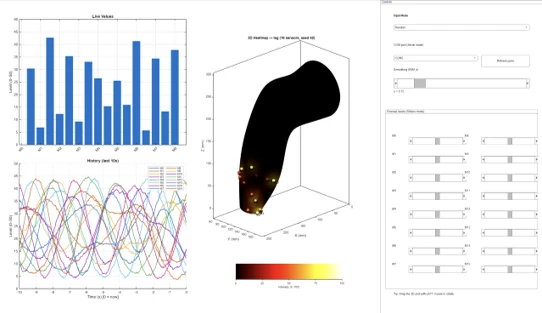
ESP32 telemetry feeds a MATLAB workspace with live channel bars, pressure histories, controls, and a 3D heat map for reviewing how load is distributed across the residual limb.
Demonstration
Two short recordings document telemetry response and the assembled prototype in operation.
Sensor input displayed through the MATLAB interface during a controlled test.
Wearable assembly and live monitoring interface demonstrated together.
Development record
Selected build, integration, and demonstration milestones from the sensor array, electronics, enclosure, and test setup.
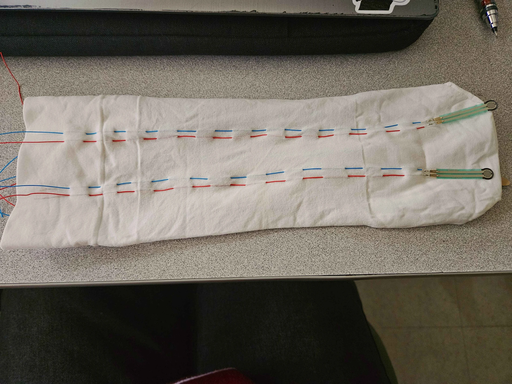
Early conductive routing and pressure-sensor placement on the liner.
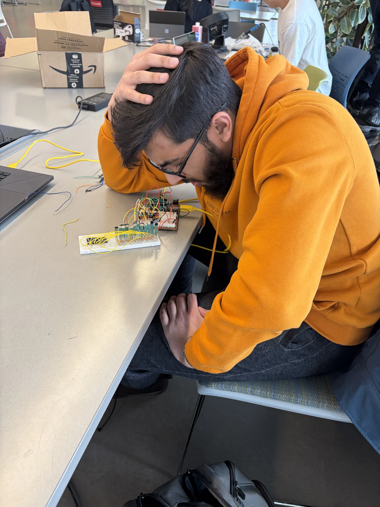
Channel behavior and acquisition electronics tested before PCB integration.
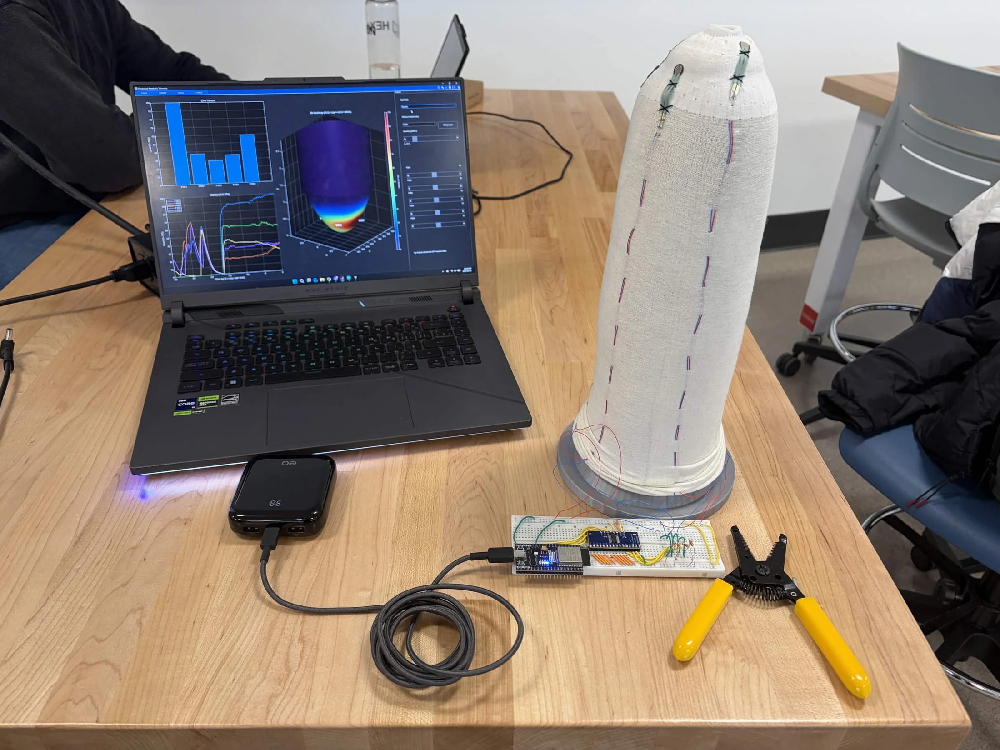
The instrumented form, acquisition circuit, and live MATLAB interface tested together.
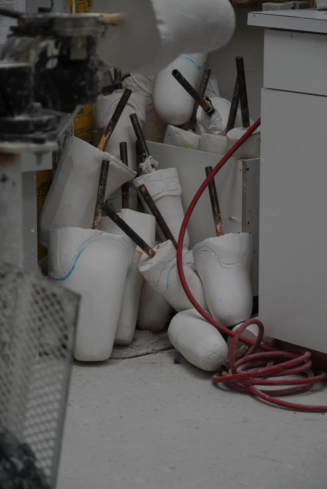
A repeatable residual-limb form prepared for sensor placement and fitting trials.
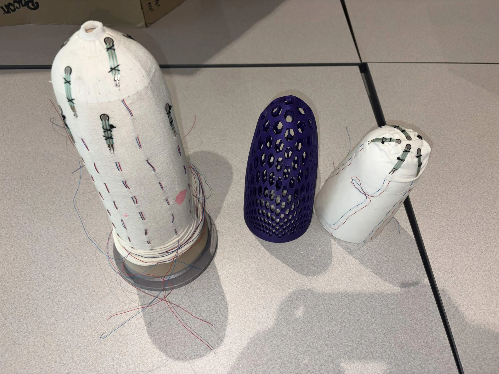
Prototype forms used to evaluate placement, fit, cable routing, and assembly.
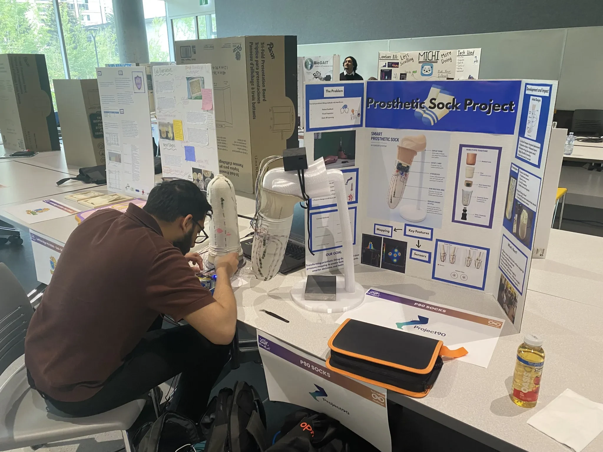
The working prototype, test forms, electronics, and project poster prepared for a public demonstration.
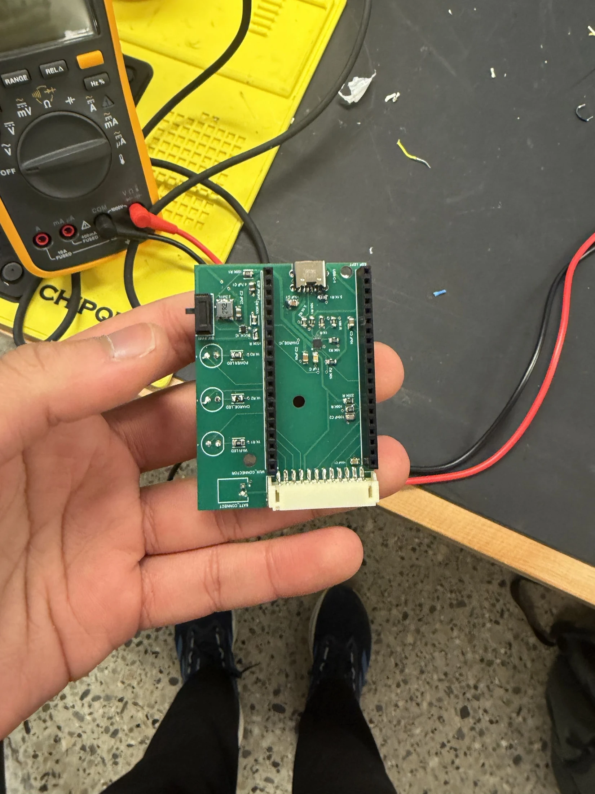
The populated board brings the sensing, power, controls, indicators, and ESP32 interface into one compact assembly.
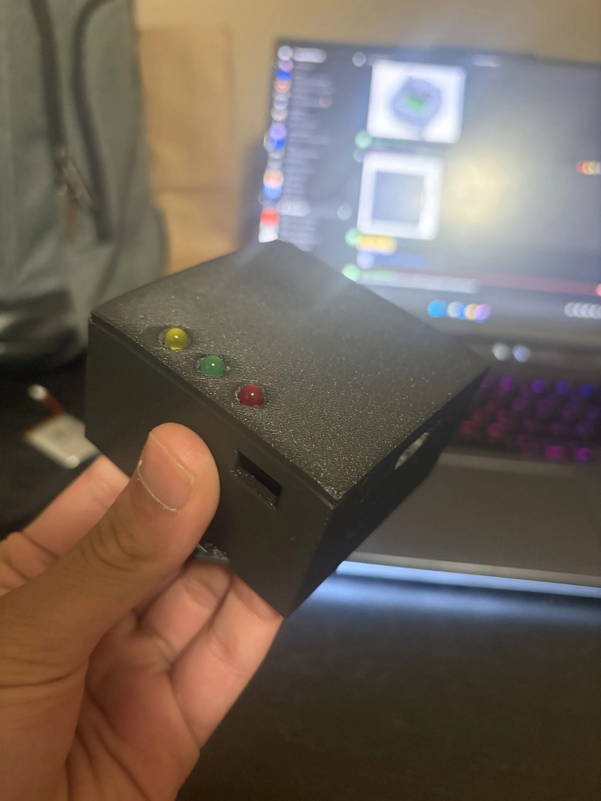
A compact printed housing protects the electronics and exposes status indicators during software testing.
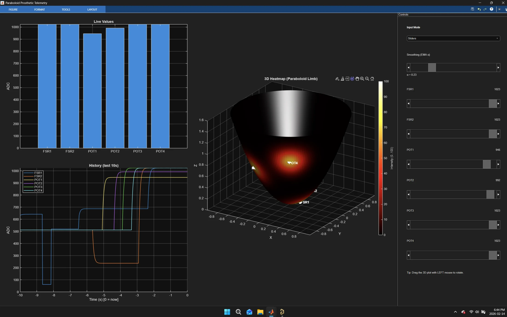
Live values, sensor histories, and the 3D pressure visualization operating together.